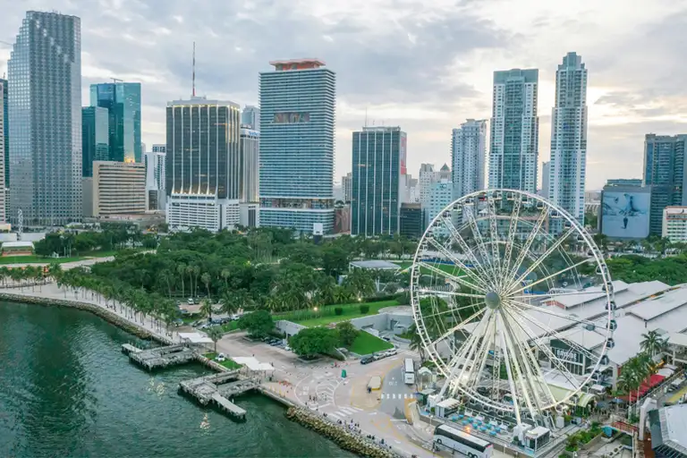
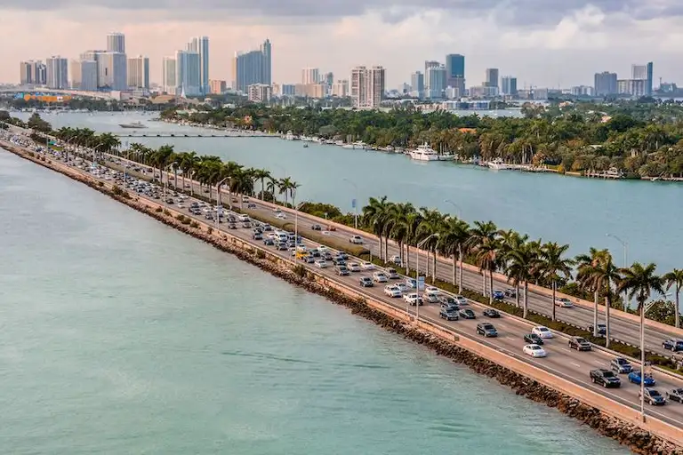

Wybierz się na przejażdżkę 200 stóp w powietrzu, aby zrobić wspaniałe zdjęcia zachodu słońca w Miami. Położone na obrzeżach centrum Miami koło obserwacyjne Skyviews Miami oferuje jedne z najlepszych widoków na panoramę Miami w granicach miasta. Każda przejażdżka trwa od 12 do 15 minut, podczas których wykonasz od czterech do sześciu obrotów - więcej niż wystarczająco dużo czasu, aby zrobić mnóstwo światowej klasy zdjęć


MacArthur Causeway oferuje zapierające dech w piersiach widoki na panoramę Miami i jest idealnym miejscem do podziwiania zabytków Południowej Florydy, takich jak Maurice A. Ferré Park i American Airlines Arena. Znajduje się tuż obok Muzeum Dziecięcego w Miami, dzięki czemu możesz spędzić przyjemny dzień z całą rodziną, podziwiając wspaniałe widoki